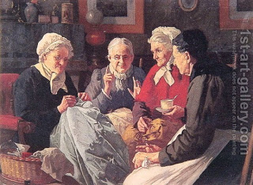

Bava Batra 165 - Three Daily Transgressions
Said Rav: "From three transgressions no man is saved each day: thoughts of sin, lack of concentration in prayer, and speaking negatively about others." Did Rav really mean that everybody engages in negative speech daily? Rather, he meant a hint of negative speech by using body language and voice inflection.
Rabban Shimon ben Gamliel said, "In a place where both open and bound documents are used, if one instructs to write an open one, but the scribe wrote a bound one, it is acceptable, because he only said it by way of example."
Rabbi Shimon ben Yochai also subscribes to the "by way of example" idea, as in the case of a woman who appointed an agent to accept her betrothal money of a silver dinar, but the agent accepted a gold dinar . She mentioned the silver dinar only by way of example, and she is betrothed with a golden dinar.
Art: Louis Charles Moeller - The gossips